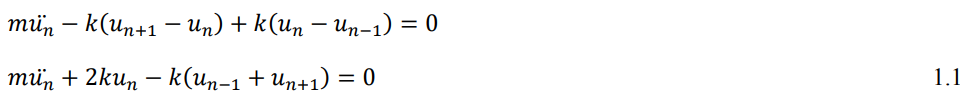
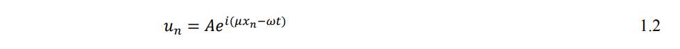
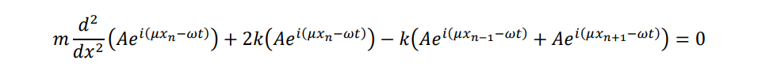
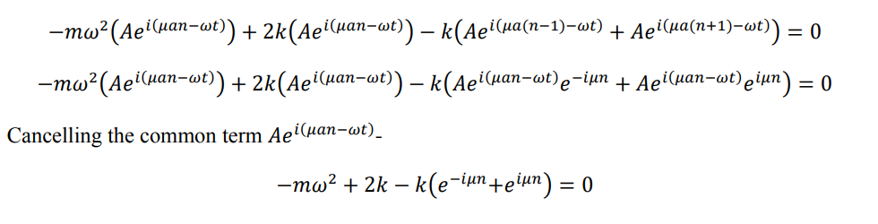
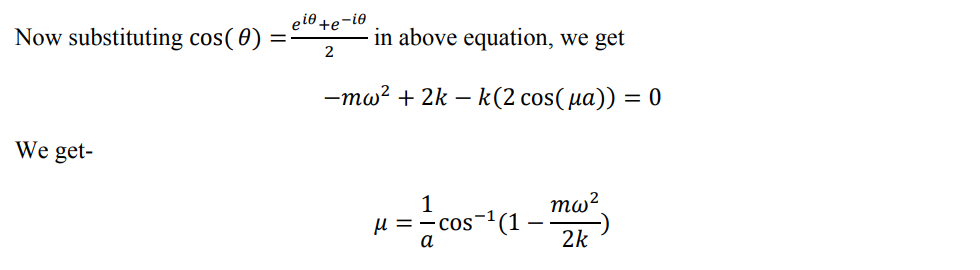
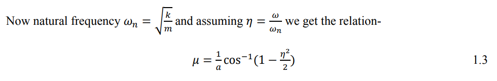

Waves in one dimensional lattice
EXPERIMENTAL METHODOLOGY
One Dimensional Lattice
1.1 Lattice Structure
We are considering an infinitely long series of spring-mass system. The value of mass is 'm' and the equivalent stiffness of spring is 'k'.
1.2 Mathematical Model
We can write the equilibrium equation for the nth unit as-
Where un is displacement of nth mass and un denotes the second order derivative of un with respect to time t.
Now According to Floquet-Bloch theorem we can assume the solution as-
Here xn is the position of nth mass, μ is wave number and ω is temporal frequency. From equation (1.1) and (1.2)
Now since the distance between two mass is 'a' we have xn =an. Substituting this in above equation we get-
Cancelling the common term Aei(μan-ωt)
 1.3 Analysis and Discussion
Here a is distance between two consecutive mass and μ is the wave number, So we vary η, keeping a fixed and observe the variation in μ. We observe that the value of μ contains a real and an imaginary part. When we try to plot the real and imaginary part separately, we get the following curves-
Fig (1.2): Variation of real part of μ, keeping a=1
Fig (1.3): Variation of real part of μ keeping a=2
Fig (1.4): Variation of imaginary part of μ keeping a=1
From above plots we can see that if the frequency ratio η is between -2 to 2, wave number will have real value, otherwise the value will be complex irrespective of 'a'.
By this we can conclude that if η is greater than 2, the wave will be attenuated i.e. waves with frequency greater than 2ωn will be attenuated.
To confirm the above observation, we apply a harmonic force at first node of the lattice and plot the displacement of 10th , 20th and 30th mass.
Fig(1.5): Response of 10th mass
Fig(1.6): Response of 20th mass
Fig(1.7): Response of 30th mass
From all these plots we can clearly see that once the value of η becomes greater than 2 attenuation in response of all these mass is observed.
We can also observe that attenuation increases as value of η increase. Also the distant masses observe more attenuation as compared to mass which is closer to the node where external harmonic force is applied.